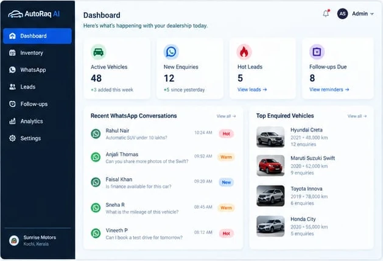
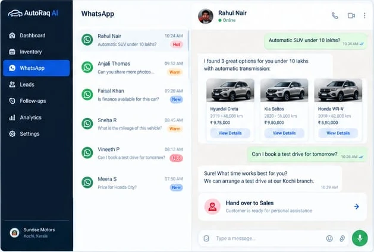
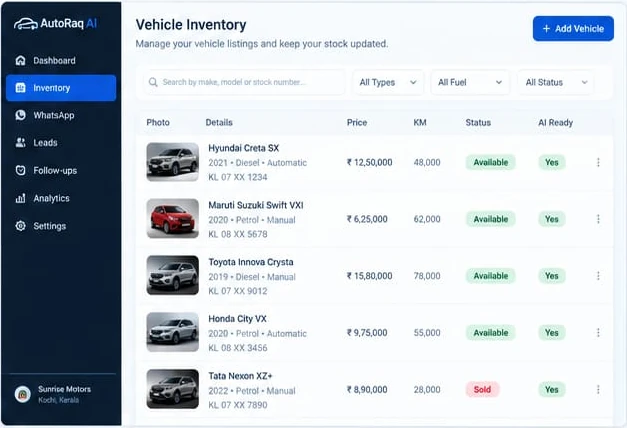
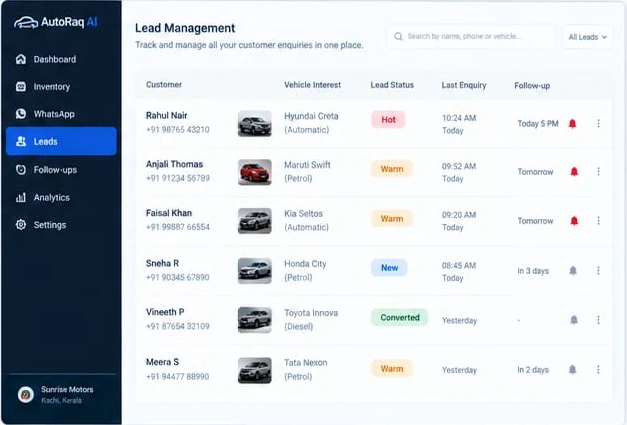
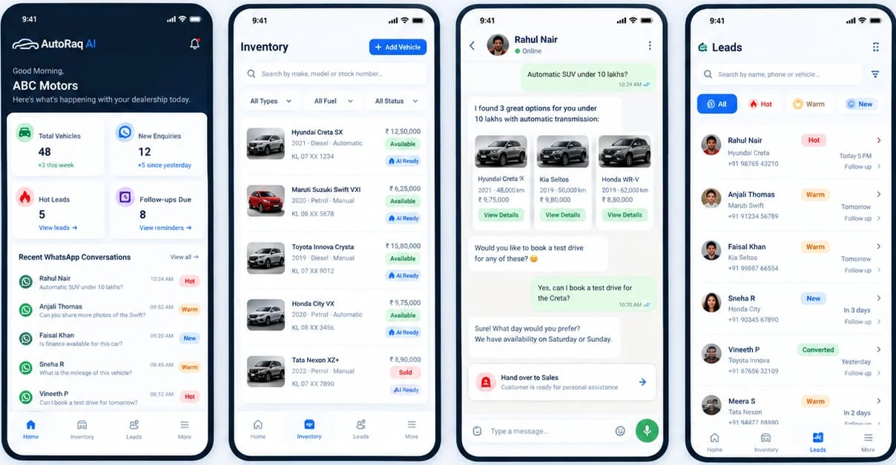

01
See what matters now
Start the day with a clear view of stock, new enquiries, hot leads, and follow-ups.
THE AI SALES ASSISTANT FOR DEALERSHIPS
AutoRaq AI helps used car and bike dealerships answer WhatsApp enquiries, show the right vehicles, and turn interested buyers into real leads.

01 / THE PLATFORM
From the first WhatsApp message to the next follow-up, AutoRaq keeps the information your team needs in one clear workspace.
Start the day with a clear view of stock, new enquiries, hot leads, and follow-ups.
Manage available vehicles and the details buyers ask for most.
Spot buyer interest and know when your team should step in.
02 / BUILT AROUND THE SALE
AutoRaq connects the buyer's question to your actual inventory, then gives your team the context to carry the sale forward.
Show relevant vehicles, answer common questions, and identify when a personal response can make the difference.
Conversation preview
Keep photos, prices, details, and availability organized so buyers see what fits.

See vehicle interest, lead status, and the next conversation in one place.

03 / HOW IT WORKS
Keep the conversation moving while your team focuses on the moments that need a human touch.
See it in a demoQuestions about a vehicle arrive through WhatsApp.
Relevant vehicles and useful details keep the chat moving.
Lead context and reminders make the next step clear.
04 / PRODUCT PREVIEW
See enquiries, check inventory, and keep up with leads from a mobile-friendly view designed for a busy sales floor.
Ask for a walkthrough Product screens are illustrative previews.
Swipe to see every screen →LET'S TALK
See how AutoRaq AI can support your dealership's sales conversations.